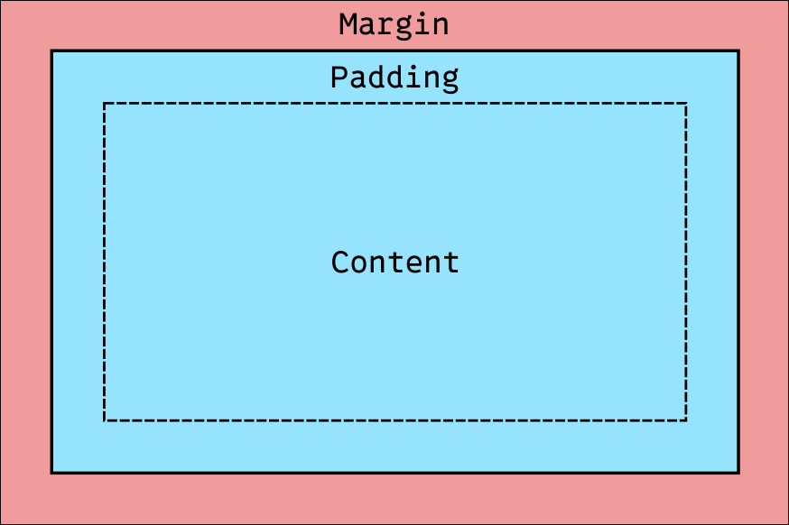

CSS Box Model
You may have noticed that HTML elements often have a margin around them. This margin can be seen clearly when we apply a background color to the element.
By default, HTML elements are rendered with some margin, so that they are spaced out from each other. But often we want to customize this spacing, or remove it entirely. We can do this by setting the margin property in our CSS:
* {
margin: 0;
}The star selector "*" targets all HTML elements on the page, so setting the margin to 0 removes the default spacing around all elements, including the body.
Margin, along with padding and border, makes up the CSS box model. The box model is a way of thinking about the layout of HTML elements. Essentially, each HTML element can be thought of as a box, in which other elements, the content, can be contained. Margin, border, and padding are properties of this box.
Margin, as covered, is a spacing property that adds space outside of an element's border.
Border is a property that adds a border around an element. The border can be styled in various ways, such as solid, dashed, or dotted, and can have different colors and widths.
Padding is a spacing property that adds space inside an element's border, between the border and the content of the element.
To see how these properties work together, let's look at an example:
Here's a diagram of the CSS box model:

And here's a demo of margin, padding, and border in action. Try clicking the buttons to see what happens when we have or don't have one of the three:
Borders
By default, HTML elements' border is not visible. In order to make it visible, we can set certain CSS properties pertaining to borders:
.box {
border-style: dashed;
border-width: 3px;
border-color: blue;
}We can also use the shorthand property border to set all border properties at once:
.box {
border: dashed 3px blue;
}Padding
Padding is a spacing property that adds space inside an element's border, between the border and the content of the element.
.box {
padding: 20px;
}In this example, we set the padding to 20px, which adds 20 pixels of space between the content of the element and its border on all sides.
Similar to the border property, the padding property is actually a shorthand property that combines the four padding values (top, right, bottom, left). If we want a different amount of padding on each side, we can specify them individually:
.box {
padding-top: 10px;
padding-right: 15px;
padding-bottom: 20px;
padding-left: 25px;
}Or we can use the shorthand property with different values for each side:
.box {
padding: 10px 15px 20px 25px;
}Margin
Margin works in much the same way as padding, but it adds space outside of an element's border.
.box {
margin: 20px;
}.box {
margin-top: 10px;
margin-right: 15px;
margin-bottom: 20px;
margin-left: 25px;
}.box {
margin: 10px 15px 20px 25px;
}